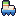
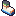
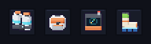
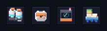
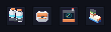
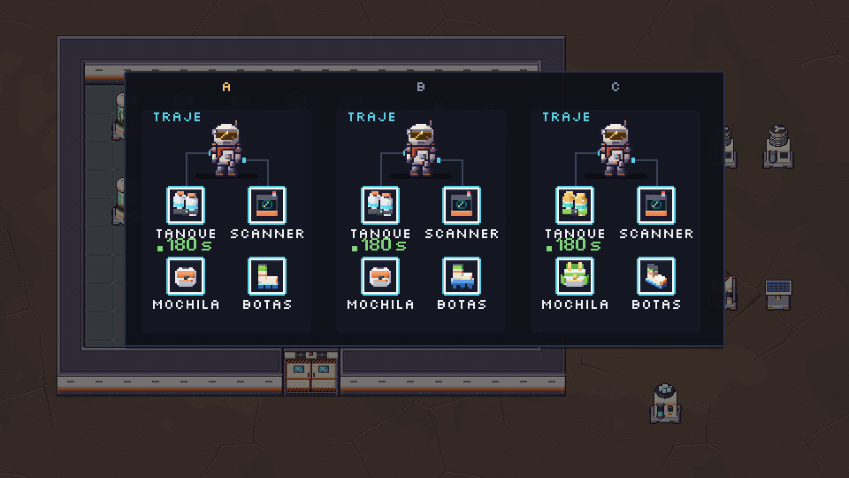
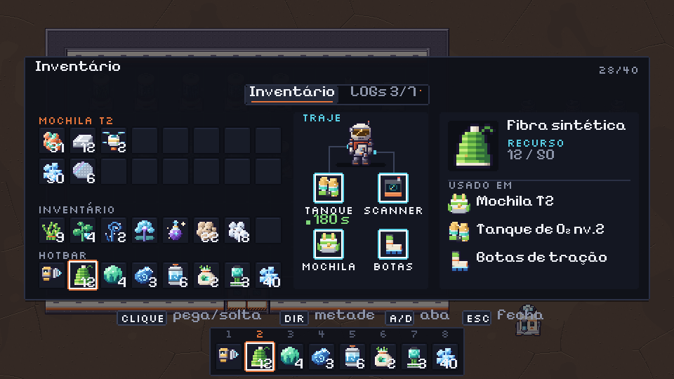

Hesper · Designer · v0.8 M5 · rodada 3 · candidatas
Rodada 3 · botas
v1.2 · o que mudou: só o
icon_boots (16×16). O dono aprovou o resto da rodada 2 (slime A e os equipáveis 3D). Agora é uma bota só, porque em 16 px o par vira bloco. Mesma cena, mesma luz e contorno #1b1630 dos equipáveis 3D aprovados, creme do traje com laranja, punho de fibra verde e sola de resina azul (a receita é fibra + resina), e cravos ou garras visíveis embaixo. São 3 candidatas bem diferentes. Nada foi pro jogo. Anteriores: rodada 2 · rodada 1.As 3 candidatas (×4, com o 1× do lado)


Vizinhos 3D aprovados, pra comparar o peso:
As botas das rodadas que não serviram:
No slot, na escala do jogo (Grande ×2)
Tanque, mochila e scanner 3D e, por último, a bota de cada candidata.
A

B

C

No cartão TRAJE do Tab A
A e B com os nv.1 3D; a C aparece com os nv.2, pra ver a bota ao lado do dourado também.

Tab A inteiro com a bota A

Recomendo A. O cano alto e a sola com cravos dão a silhueta em "L" que lê "bota" de longe, e no slot ela tem o mesmo peso do tanque e da mochila. A B é a que mais diz "tração", mas a sola grande puxa o olho pra uma plataforma azul e o cano fica baixo. A C tem mais volume, mas a boca do cano vista de cima vira uma mancha cinza e a leitura demora.
Pro Dev integrar (depois do ok do dono)
- Só troca PNG:
v08_m5_itens_r3/pendentes/icon_boots.png(A) viraassets/sprites/icon_boots.png, 16×16, ícone de item como os outros. Se o dono escolher B ou C:candidatas/icon_boots_B.pngou_C.png, renomeado. - O fantasma do slot BOTAS vazio é esse mesmo ícone, a alpha 45.
- Gerar de novo:
python3 tools/sprites/v08_m5_r3_botas.py. É determinístico e só lêassets/.